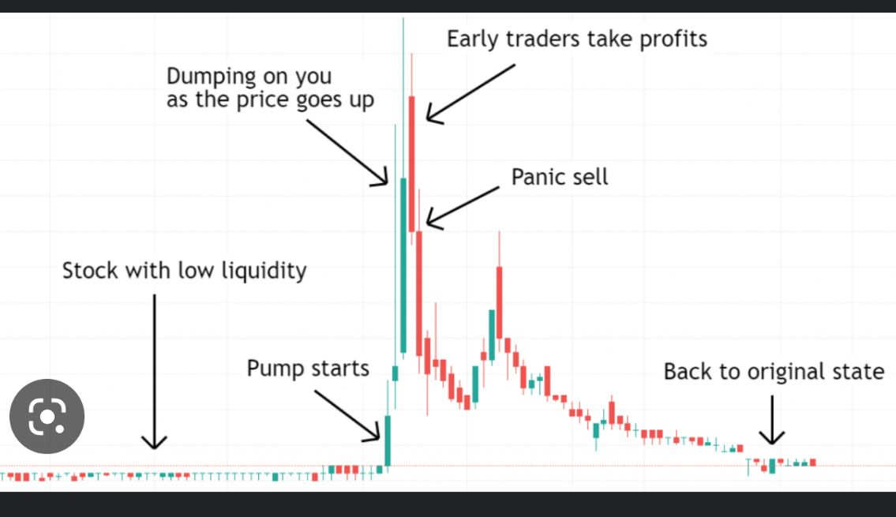
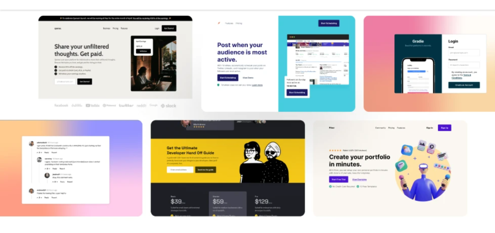
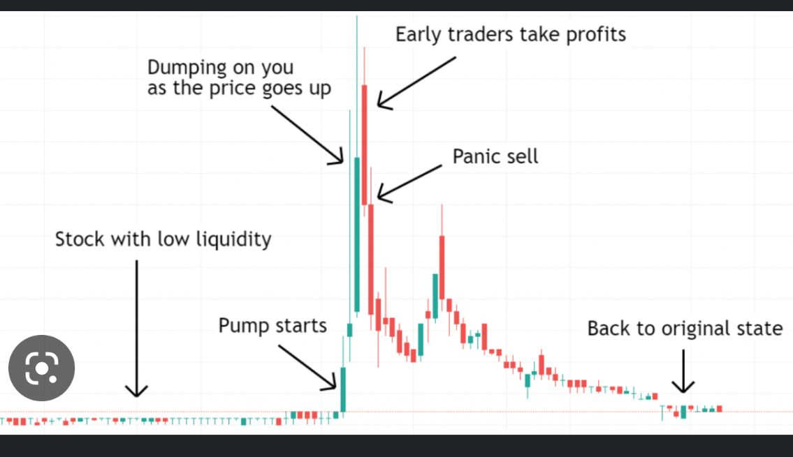
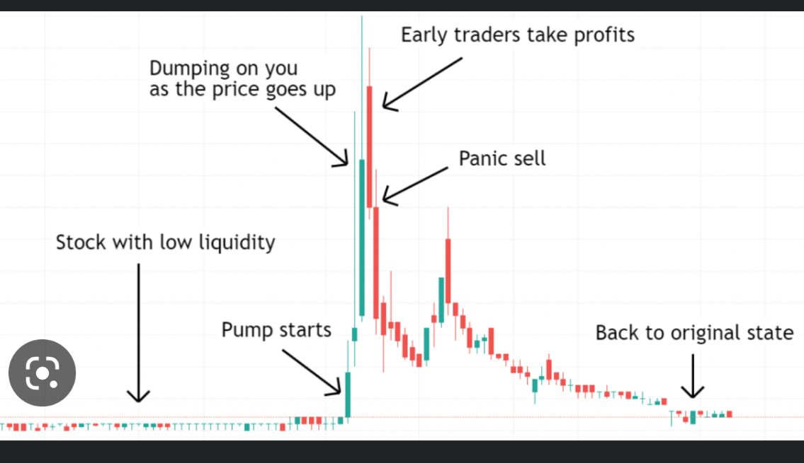

To connect the world through the most innovative, reliable
enabling individuals, businesses and economies to thrive in ;
Diet & nutrition services
Crypto trading 💹
Web development
Objectives
With providing nutrition/diet therapy
• Apply for open jobs (for first few months during the time
I’d be having classes in full stack dev) in order to boost my resume.
• Later, when my resume is boosted , I’d develop a website where people
could hit me up with either a text or phone call and or video chat in order
to deliver the services needed at a cost.
• The client could set up a meeting with me to discuss things at his home
(thus me delivering services at door step with just a phone call away)
With crypto trading
• I’ll invest an amount for pump for about a month
withdraw half of it and invest the other halfThe cycle repeats
Web dev
Freelance web dev : I’d get on different freelancing platforms
upload my portfolios and resume.
I’d get the premium subscription in order to increase
my chances of landing projects
Sending individuals links to my personal site to my portfolio so
they can hit me up when they need my service.
Services
Diet therapy services
Web design and development
Data analysis services
Start up summary
MIFI
Monitor
Monitor
computer Desk
ergonomic chair
Set up models

Service work
An amount per hour depending on the time frame given/ deadlline
Branding
Building a website that showcase portfolios of services we are to offer
Sharing flyers on all media platforms
Branding Set Up Model

Market Strategy
Sign up on the various freelancing sites. Upload my portfolios, and sell my services Personnel
Me for now but will get people with different backgrounds who would add more Workshopx
Every now and then when new tools come in the system that would be needed for future projects. Financial budget
Upgrade to premium - $7-20 per month
Trading = $10-15
Data-Gh¢100-200 per month
Summary
The Mission is to connect the world through the most innovative, reliable
enabling individuals, businesses. With the objective of providing freelance
services. A Start up – summary – of MIFI, Laptop, Monitor, computer Desk
and an ergonomic chair. The location is work from home.
 
